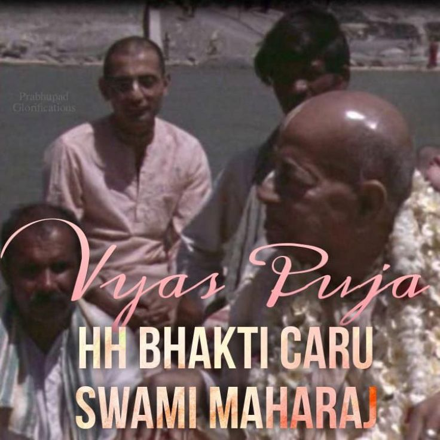

Vyas Puja HH Bhakti Caru Swami Maharaj
Posted on : 17th September, 2024

One day an unusual, young Bengali man came to Mayapur. Named Kisore, he was a Vaisnava from birth and obviously intelligent. He spoke impeccable English and was also fluent in German because he was a student in a German university. With simply a little coaxing, he surrendered to Srila Prabhupada and quickly got initiated, receiving the name Ksira-cora-gopinatha dasa. On several occasions he kindly translated conversations between Pisima and me. Several months later, Srila Prabhupada awarded this cultured young man sannyasa, changing his name to Bhakti Caru Swami.
[SP is Coming, April 1976-March 1977 by Mahamaya DD]
Who can ever understand the potency of Mercy, of such Great Vaishnavas? Who are by nature merciful towards the fallen conditioned souls. mahānta-svabhāva ei tārite pāmara (Cc M 8.39) By nature it's a general practice of these saintly devotees of the Lord to tārite pāmara to deliver the fallen soul. We can only gather Information, for realizing we must depend on the mercy of the Merciful Lord and his devotees. What else is in our hand?
~Admin